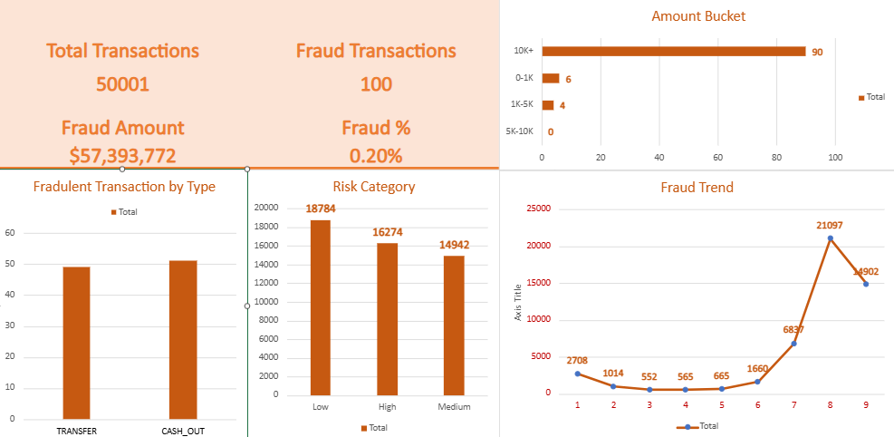

Bank Fraud Detection & Risk Analytics Dashboard
Microsoft Excel (Online) | Pivot Tables | Risk Analytics | Fraud Detection

Business Problem
The financial institution lacked a structured system to detect and monitor fraudulent transactions.
There was limited visibility into high-risk transactions, making it difficult to proactively identify fraud patterns
and mitigate financial losses.
Key Performance Indicators (KPIs)
- Total Transactions Processed
- Fraudulent Transaction Count
- Fraud Rate (%)
- Total Financial Loss Due to Fraud
- High-Risk Transaction Volume
- Fraud Detection Rate
Key Insights
- Fraudulent transactions were concentrated in specific transaction categories and patterns.
- High-value transactions showed a higher risk of being flagged as fraudulent.
- A small percentage of transactions contributed to the majority of fraud losses.
- Early identification of risky patterns can significantly reduce financial exposure.
Tools Used
Microsoft Excel (Excel for Web), Pivot Tables, Pivot Charts, Data Analysis